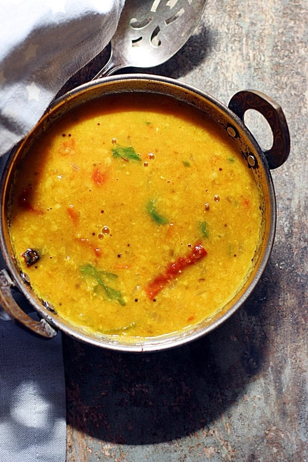

Homemade Daal

Description
Daal is a staple dish in my Pakistani household-- here is a simple recipe we use to make fresh, homemade daal
Ingredients
- 1 cup masoor daal
- 1 teaspoon ground turmeric
- 1 teaspoon kosher salt
- 2 tablespoons fresh lime juice
Steps
- In a large pot over high heat, combine the lentils, turmeric, salt, and 3 cups of water and bring to a boil
- Reduce the heat to medium high, insert a large long-handled spoon into the pot, and stir sporadically until the lentils are soft (5-7 minutes)
- Remove the dish from the heat, cover, and let sit for five minutes
- Add the lime juice and set aside